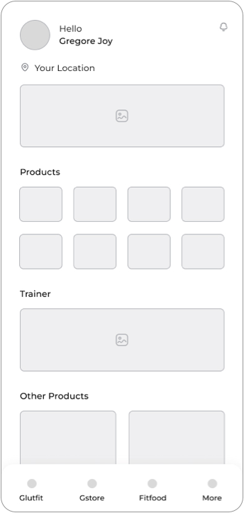

Glutfit
Glutfit
The Ultimate Source of Fitness & Health for your Future
The Upcoming product to break the monopoly of Cultfit.
The Challenge
Distroy the monopoly
The Idea came into our mind last year while discussing casually about our day today life and work balancing. So we use to travel regulary which cousing distraction to our gym life and other workout activities. So we planned to make an application will cure the issues we are facing. So we decided to create an application, Glutfit which will provide access to mange our workouts and diet easly. It has many business verticles will comes under one app and our main moto was to overcome the monopoly of a beggest app in the current market.
My Role
My role for this project started from the business idea as it came from the discussion with me and the main stakeholder. I led the Product Design - User Experience (UX) and User Interface (UI) - of this project end to end.
Design process
The first step of the design process involved user interviews and desk research to understand how competitors and users behave. I believe it’s important to get this information early on in the process, before having an idea or prototyping.
After analysing this insights, I began to conceptualize the solution, focusing on user flows and wireframe to give me a way to iterate faster through ideas. From this, From this, I went to the production mode, designing the interface considering design principles such as contrast, hierarchy and feedback; brand attributes; user interactions, and the imagistic universe presented as briefing by the case.

Research
User Interview
Before starting a product like Glutfit, conducting user interviews is crucial to gain valuable insights into the target audience's needs, preferences, and pain points. The interview sample took into account men and women aged from 18 to 60 with different health activities. The interview took approximately 30 minutes. Here's a structured approach to conducting user interviews:
> What are your current fitness goals and challenges?
Understanding users' fitness goals provides insights into their motivations for using the product
and helps tailor features to meet their needs.
> What fitness activities do you currently engage in, and how often?
Learning about users' existing fitness routines helps identify areas where the product can
complement or enhance their current practices.
> What motivates you to stay consistent with your fitness routine?
Exploring users' motivations for staying consistent with their fitness routine helps identify key
factors that drive engagement and retention.
> What features or tools do you find most valuable in a fitness app or program?
Gathering feedback on users' preferred features helps prioritize development efforts and ensure
that the product aligns with their expectations.
> What challenges or frustrations have you encountered with existing fitness apps or programs?
Identifying pain points and challenges with existing solutions helps uncover opportunities for
improvement and differentiation in the market.


These questions provided us valuable insights into users' needs, preferences, and pain points. informing the development of a product like Glutfit that resonates with its target audience and delivers meaningful value.
Customer Insights
After analysing the interviews, despite the amount of generated data, this was the most relevant information for decision-making in creating the solution:
60%
Flexibility in Scheduling slots in fitness center
Offering options like on-demand classes, flexible cancellation policies, and the ability to book last-minute sessions could greatly appeal to this need for flexibility.
55%
Variety of fitness classes and activities to choose from
Offering a diverse range of classes, such as yoga, pilates, HIIT, dance, and martial arts, could cater to this need for variety and attract a broader audience.
40%
Easy-to-use interfaces, quick booking processes, and seamless payment options
10%
Social interaction by attending fitness classes
They like to connecting individuals, sharing their fitness journey, and receiving support and motivation from both instructors and fellow participants
What we see is that although 60% of users need a proper solution for intant booking of gym and some of them need more idea about the health topics.
Desk Research
In addition, I researched data and habits related to other current Health application. The goal was to understand how competitors behave and benchmark innovative health programmes.
With the research we got to know that there is very few applications, that are not properly functioning now, is providing few of our business models. But our main intension was to break the monopoly of the big gaint.
Market Insights
After talking to users, we found out that many people really want easy ways to book fitness classes. They like when the app is simple to use and lets them book classes whenever they want. People also want a lot of different types of classes, like yoga or HIIT workouts. They like feeling connected to others in the fitness community and getting support from instructors and friends. Some users worry about how much the classes cost and want to know they're getting good value for their money. They also want the app to work smoothly, letting them easily schedule classes, track their workouts, and pay for sessions. These insights show us that there's a big opportunity to create an app that meets these needs and makes people excited to keep using it for their fitness goals.
The Solution
About Glutfit
Glutfit is a cutting-edge fitness platform that has set out to revolutionize the fitness industry by offering a comprehensive suite of services, catering to the diverse needs and aspirations of fitness enthusiasts worldwide. As a leading fitness ecosystem, Glutfit combines technology, convenience, and personalization to empower individuals to achieve their health and wellness goals effectively and sustainably.
Why glutfit?
We will transform the fitness industry and inspire individuals to lead healthier lifestyles. We aim to provide a holistic platform that connects fitness enthusiasts with certified professionals, state-of-the-art fitness centers, and a wide range of fitness products and services.
How Glutfit is usefull for the user?
The fitness and wellness industry is experiencing a significant paradigm shift, with more people becoming health-conscious and prioritizing their well-being. With increasing awareness of the importance of fitness, the market opportunity for Glutfit is vast.
User Flow
The main point of the flow is to ensure that the functionality is always visible to the user, but not in an obstructive way. So I decided to add it to the app’s bottom navigation. It’s only a tap away, but still not intrusive.
By tapping on the genius icon, users are taken to the onboard flow, interest collection and dashboard where they can check point balance and rewards.

Wireframes
The Wireframe was designed to build the structure and architecture of the information and only then go to visual and interactions.
User Interface

Health Tracking
Easy health tracker for the users with the ability to monitor essential metrics such as weight and height. By incorporating features for weight and height tracking, we empower users to take control of their health journey and make informed decisions towards achieving their wellness goals. Through intuitive interfaces and personalized tracking options, our platform facilitates seamless monitoring of these vital indicators, allowing users to track their progress over time with ease. Whether users are striving to manage their weight, track growth milestones, or maintain overall well-being, our health tracking features serve as invaluable tools for fostering accountability, motivation, and success on their health and fitness journeys.
Branding
Color
The brand’s guidelines led us to pick a playful and inviting tone, so we chose Red and Navy Blue to break the white and make the brand youthful and remarkable.
For text, Black and a much darker variation of Red has been brought in to ensure reading and contrast, thus reaching appropriate levels of accessibility.
Typography
This font looks clean and modern, making it easy for people to read and understand. In the app, Montserrat's different styles can help highlight important information like class times or instructor names. Its bold and condensed styles make headlines and buttons stand out, so users can easily find what they need. With Montserrat, the app will look professional and easy to use, which is important for people booking fitness classes.
Other Components

Validation
The Glutfit app is a new and advanced way to get fit. It's not like anything you've seen before in the fitness world. It offers a lot of different services to help people reach their fitness goals, no matter where they are. Whether you're into running, yoga, or weightlifting, Glutfit has something for everyone. It's all about making fitness easier and more enjoyable for people all over the world. With Glutfit, you can find what works best for you and get the support you need to stay motivated and healthy. It's changing the way people think about fitness, and it's making a big difference for a lot of people.
Thanks
A big thanks to the people who participated in the interviews and gave me feedback to improve the idea. In particular, I thank my team mates and and who all worked with for the coopertaion and. support.That’s all.